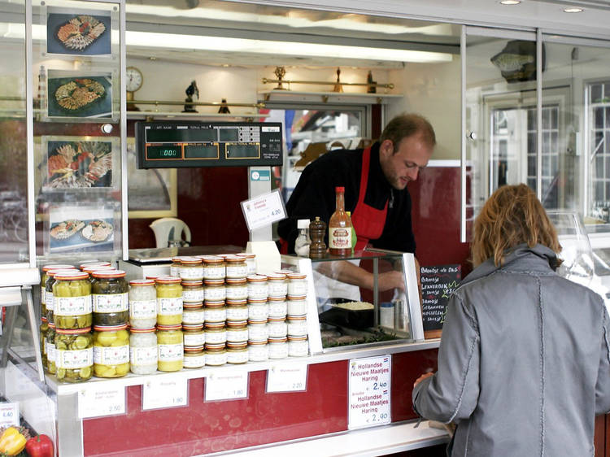

Cool things to do in Amsterdam:
Visit the famous flower market
When you think of Amsterdam, images like clogs, tulips, cheese and windmills spring to mind. The most famous place to buy tulips is the Bloemenmarkt, along the Singel, and you can find flavourful cheeses at the smart Reypenaer tasting room.
Picnic in the Vondelpark
For the perfect picnic, head to the Vondelpark. The largest green space in Amsterdam, the park is named after its best-known poet Joost van den Vondel (1587-1679), whose controversial play Lucifer caused the religious powers of the time to crack down on 'notorious living'. Yet it continues to thrive in the summertime, when people gather to smoke, drink and feast here. The park is also something of a cultural hub, with a number of sculptures including one by Picasso.
Eat street food, Amsterdam-style

You simply must try raw herring. The best time to try one is between May and July when the new catch hits the stands, because this doesn't require any extra garnish such as onions and pickles, since the fish's flesh is at its sweetest. There's a quality fish stall or store around most corners. There are stalls all over town, but the best places to buy a herring include the family-run Stubbe's Haring on the Singel Haarlingersluis near Centraal Station. This fish is a bargain snack and makes for an authentic Dutch eating experience.
For more ideas click here
Where to stay
The Medieval Centre, Red Light District and Nieuwmarkt are in the heart of the tourist action but can be noisy, as can parts of the Southern Canal Ring (particularly around Rembrandtplein and Leidseplein). Quieter local but still central neighbourhoods include Vondelpark, the Western Canal Ring, the Jordaan and De Pijp.
Where to eat
Try traditional Dutch dishes at Bistro Bij Ons, La Falote or old-school kroketten (croquettes) specialist Van Dobben; or contemporary twists at Greetje or Hemelse Modder. Don't leave town without experiencing a spicy rijsttafel ('rice table'; Indonesian banquet of small dishes); Tempo Doeloe does one of the best. Tuck into a Surinamese roti (flatbread wrap) at Tokoman. Lively international eat streets in this multicultural city include Utrechtsestraat, near Rembrandtplein, and Amstelveenseweg, along the Vondelpark's western edge.
Where to drink

Discover how home-grown Heineken is made at the entertaining Heineken Experience. Admission includes beers and a canal-boat ride to the Heineken Brand Store. Tours are also available at the wonderful independent brewery Brouwerij 't IJ, at the foot of the 18th-century De Gooyer Windmill. Jenever (Dutch gin) is also a must-try, especially at tasting houses such as Wynand Fockink. Party hubs Rembrandtplein, Leidseplein, the Medieval Centre and Red Light District are renowned for their pumping nightlife, with a plethora of pubs and clubs. But to truly experience the unique Dutch quality of gezellig (conviviality/cosiness), head to a history-steeped bruin café (brown cafe, ie pub, named for the nicotine-stained walls). Hoppe and Het Papeneiland are two of countless gems. 'Coffeeshops' (cannabis cafes) famously sprinkle throughout the city; popular ones include Dampkring and Abraxas.
Where to shop
Snacks such as frites (fries, typically smothered in mayonnaise), haring (raw herring, served with diced onion), and stroopwafels (caramel-syrup-filled waffles), as well as Dutch cheese (gouda, edam, et al) are staples at street markets,including the Jordaan's Lindengracht Market, and the city's largest, De Pijp's Albert Cuypmarkt. They also sell everything from clothes to fabrics, bike locks and flowers. Tulips in spring and bulbs year-round fill Amsterdam's 'floating' flower market, the Bloemenmarkt. For off-beat, individual boutiques, including famed Dutch design homewares and fashion, crisscross the nine small streets making up the Negen Straatjes.